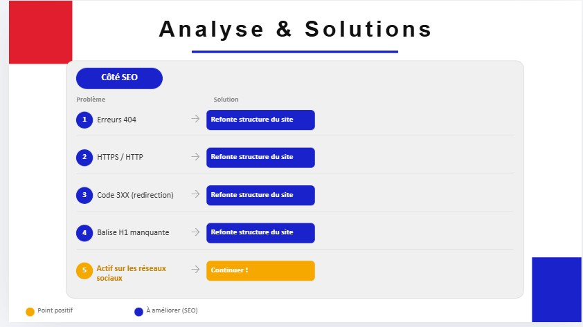
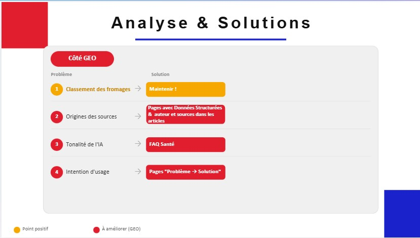
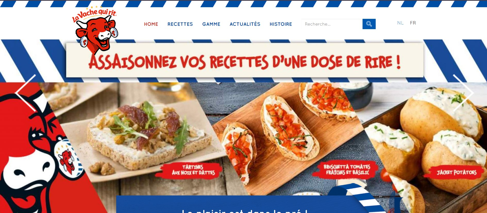

Stratégie de Visibilité : La Vache Qui Rit
Description brève
En tant que consultants, nous avons audité et modernisé la présence en ligne de la marque pour répondre aux nouvelles habitudes de recherche (Google et IA).
Stack technique
Objectifs
Passer d'une marque "connue" à une marque "recommandée" par les IA (ChatGPT, Perplexity) et corriger les failles du site web.
Impact et Résultats obtenus
Audit de visibilité
J'ai découvert que malgré sa notoriété, le site officiel n'était jamais cité par les IA. Les algorithmes propagent un avis négatif sur l'aspect nutritionnel du produit.
Stratégie de recommandation
J'ai mis en place un plan pour que la marque redevienne une source de confiance. L'idée est de répondre directement aux questions des consommateurs pour influencer positivement les réponses des IA.
Démonstration technique
J'ai développé un prototype de site moderne (utilisant Cursor) pour prouver qu'une meilleure structure technique améliore immédiatement l'image de marque.
Automatisation avec Dust
J'ai créé des agents IA sur mesure pour produire du contenu de haute qualité rapidement. Ces agents me permettent de générer en un clic des articles optimisés qui corrigent l'image nutritionnelle de la marque auprès des moteurs de recherche.
Présentation Jury
J'ai défendu cette stratégie devant un jury pour démontrer comment transformer un risque de réputation en opportunité de croissance digitale.
Audit SEO & GEO


Comparatif : site actuel vs prototype V2
Vue côte à côte pour comparer l'expérience du site actuel de la marque et la refonte proposée.
Site actuel
